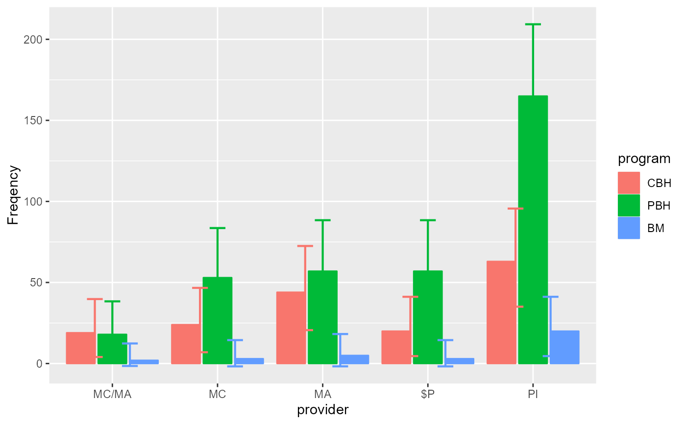
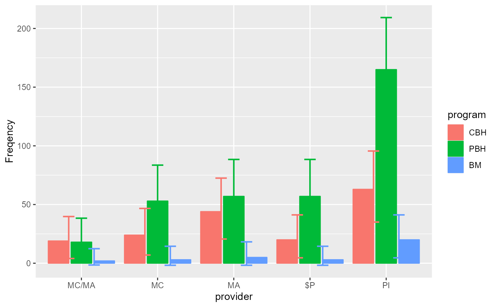

The function anofaPlot() performs a plot of frequencies for designs with up to 4 factors
according to the ANOFA framework. See (Laurencelle and Cousineau 2023)
for more. The plot is
realized using the suberb library; see (Cousineau et al. 2021)
.
The functions count(), init.count() and CI.count() are internal functions.
anofaPlot(w, formula, confidenceLevel = .95, showPlotOnly = TRUE, plotStyle = "line",
errorbarParams = list( width =0.5, linewidth=0.75 ), ...)
count(n)
init.count(df)
CI.count(n, gamma =0.95)Arguments
- n
the count for which a confidence interval is required
- w
An ANOFA object obtained with
anofa();- formula
(optional) Use formula to plot just specific terms of the omnibus test. For example, if your analysis stored in
whas factors A, B and C, thenanofaPlot(w, ~ A * B)will only plot the factors A and B.- confidenceLevel
Provide the confidence level for the confidence intervals. (default is 0.95, i.e., 95%).
- plotStyle
(optional; default "line") How to plot the frequencies. See superb for other layouts (e.g., "line")
- showPlotOnly
(optional, default True) shows only the plot or else shows the numbers needed to make the plot yourself.
- errorbarParams
(optional; default list( width =0.5, linewidth=0.75 ) ) A list of attributes used to plot the error bars. See superb for more.
- ...
Other directives sent to superb(), typically 'plotStyle', 'errorbarParams', etc.
- df
a data frame for initialization of the CI function
- gamma
the confidence level
Value
a ggplot2 object of the given frequencies.
Details
The plot shows the frequencies (the count of cases) on the vertical axis as a function of the factors (the first on the horizontal axis, the second if any in a legend; and if a third or even a fourth factors are present, as distinct rows and columns). It also shows 95% confidence intervals of the frequency, adjusted for between-cells comparisons. The confidence intervals are based on the Clopper and Pearson method (@cp34) using the Leemis and Trivedi analytic formula (@lt96). This "stand-alone" confidence interval is then adjusted for between-cell comparisons using the superb framework (@cgh21).
See the vignette DataFormatsForFrequencies for more on data format and how to write their
formula. See the vignette ConfidenceInterval for details on the adjustment and its purpose.
References
Cousineau D, Goulet M, Harding B (2021).
“Summary plots with adjusted error bars: The superb framework with an implementation in R.”
Advances in Methods and Practices in Psychological Science, 4, 1--18.
doi:10.1177/25152459211035109
.
Laurencelle L, Cousineau D (2023).
“Analysis of frequency tables: The ANOFA framework.”
The Quantitative Methods for Psychology, 19, 173--193.
doi:10.20982/tqmp.19.2.p173
.
Examples
#
# The Landis et al. (2013) example has two factors, program of treatment and provider of services.
LandisBarrettGalvin2013
#> provider program obsfreq
#> 1 MC/MA CBH 19
#> 2 MC/MA PBH 18
#> 3 MC/MA BM 2
#> 4 MC CBH 24
#> 5 MC PBH 53
#> 6 MC BM 3
#> 7 MA CBH 44
#> 8 MA PBH 57
#> 9 MA BM 5
#> 10 $P CBH 20
#> 11 $P PBH 57
#> 12 $P BM 3
#> 13 PI CBH 63
#> 14 PI PBH 165
#> 15 PI BM 20
# This examine the omnibus analysis, that is, a 5 (provider) x 3 (program):
w <- anofa(obsfreq ~ provider * program, LandisBarrettGalvin2013)
# Once processed into w, we can ask for a standard plot
anofaPlot(w)
#> superb::FYI: The variables will be plotted in that order: provider, program (use factorOrder to change).
#> superb::FYI: Running initializer init.count
 # We place the factor `program` on the x-axis:
anofaPlot(w, factorOrder = c("program","provider"))
#> superb::FYI: Running initializer init.count
# The above example can also be obtained with a formula:
anofaPlot(w, ~ program * provider)
#> superb::FYI: Running initializer init.count
# We place the factor `program` on the x-axis:
anofaPlot(w, factorOrder = c("program","provider"))
#> superb::FYI: Running initializer init.count
# The above example can also be obtained with a formula:
anofaPlot(w, ~ program * provider)
#> superb::FYI: Running initializer init.count
 # Change the style for a plot with bars instead of lines
anofaPlot(w, plotStyle = "bar")
#> superb::FYI: Running initializer init.count

# Changing the error bar style
anofaPlot(w, plotStyle = "bar", errorbarParams = list( width =0.1, linewidth=0.1 ) )
#> superb::FYI: Running initializer init.count
# An example with 4 factors:
if (FALSE) {
dta <- data.frame(Detergent)
dta
w <- anofa( Freq ~ Temperature * M_User * Preference * Water_softness, dta )
anofaPlot(w)
anofaPlot(w, factorOrder = c("M_User","Preference","Water_softness","Temperature"))
# Illustrating the main effect of Temperature (not interacting with other factors)
# and the interaction Preference * Previously used M brand
# (Left and right panels of Figure 4 of the main article)
anofaPlot(w, ~ Temperature)
anofaPlot(w, ~ Preference * M_User)
# All these plots are ggplot2 so they can be followed with additional directives, e.g.
library(ggplot2)
anofaPlot(w, ~ Temperature) + ylim(200,800) + theme_classic()
anofaPlot(w, ~ Preference * M_User) + ylim(100,400) + theme_classic()
}
# etc. Any ggplot2 directive can be added to customize the plot to your liking.
# See the vignette `Example2`.
# Change the style for a plot with bars instead of lines
anofaPlot(w, plotStyle = "bar")
#> superb::FYI: Running initializer init.count

# Changing the error bar style
anofaPlot(w, plotStyle = "bar", errorbarParams = list( width =0.1, linewidth=0.1 ) )
#> superb::FYI: Running initializer init.count
# An example with 4 factors:
if (FALSE) {
dta <- data.frame(Detergent)
dta
w <- anofa( Freq ~ Temperature * M_User * Preference * Water_softness, dta )
anofaPlot(w)
anofaPlot(w, factorOrder = c("M_User","Preference","Water_softness","Temperature"))
# Illustrating the main effect of Temperature (not interacting with other factors)
# and the interaction Preference * Previously used M brand
# (Left and right panels of Figure 4 of the main article)
anofaPlot(w, ~ Temperature)
anofaPlot(w, ~ Preference * M_User)
# All these plots are ggplot2 so they can be followed with additional directives, e.g.
library(ggplot2)
anofaPlot(w, ~ Temperature) + ylim(200,800) + theme_classic()
anofaPlot(w, ~ Preference * M_User) + ylim(100,400) + theme_classic()
}
# etc. Any ggplot2 directive can be added to customize the plot to your liking.
# See the vignette `Example2`.